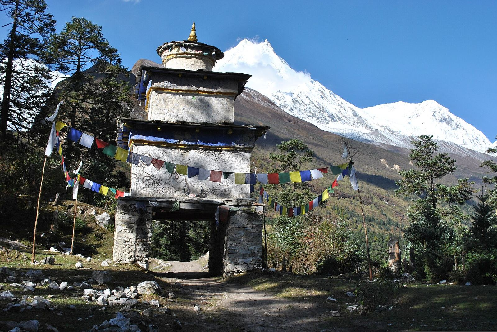
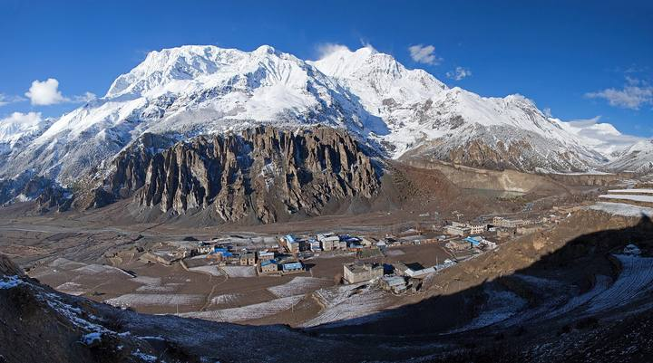
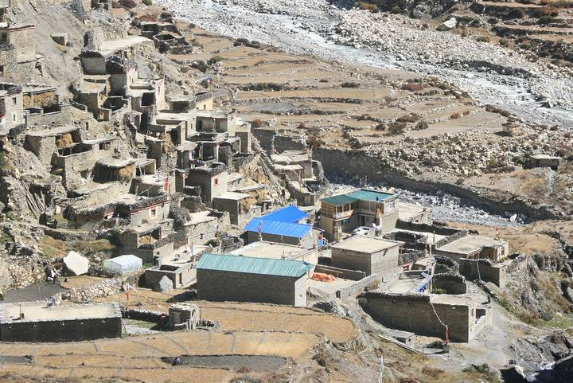
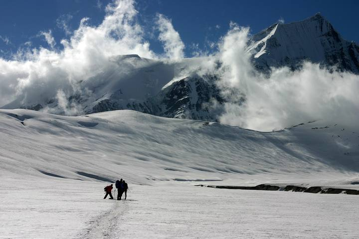

Manaslu Circuit
A two-week circuit up the Budhi Gandaki gorge to the Tibetan-influenced villages of Nubri and over the Larkya La to the Annapurna side, with rest days at Sama Gaun and Samdo.

_to_Ro_(Samagaun),_Gorkha.jpg){kind=link}
- Duration
- 12–18 days
- Distance
- 150 kmapproximate
- Highest point
- 5,106 mLarkya La · 16,752 ft
- Highest night
- 4,460 mDharamsala
- Difficulty
- ChallengingTeahouse lodges
- Best months
- Apr–May, Oct–Nov
Is this trek right for me?
The walking
13 days in all. Most walking days are 6 to 7 hours on foot, and the longest is about 10 hours. Long days and several nights above 4,000 m, or a pass above 5,000 m.
The height
You sleep as high as 4,460 m. Most people feel the altitude at this height. The plan includes the rest days you need: do not shorten it.
Where you sleep
In lodges every night: a simple twin room, a shared bathroom and hot meals in a warm dining room.
The help you need
This is a restricted area. A registered trekking company must arrange your permit, and a licensed guide walks with you.
What it costs
A guided trip with a trekking company usually costs USD 900 to 1,300 a person, going by the prices 10 companies published for 2026.
Overview
The Manaslu Circuit follows one river, the Budhi Gandaki, from hot, terraced mid-hills at under 900 m to its source glaciers below the Tibet border. The first days thread a deep gorge on a trail cut into cliffs and strung with suspension bridges. Above Deng the valley opens into Nubri, a line of stone villages with mani walls, monasteries and wide views of Manaslu, Himalchuli and Ngadi Chuli.
The crux is the Larkya La, a long, cold crossing at 5,106 m that starts before dawn from the huts at Dharamsala and ends eight to ten hours later in Bhimtang. The pass is not technical in normal conditions, but it is high, exposed and far from help, and snow can close it for days. The standard plan builds in two acclimatization days, at Sama Gaun and Samdo, and both are worth keeping.
This is a restricted area, so you trek with a licensed guide on a permit arranged by an agency. Lodges now cover every stage, though rooms and menus are simpler than on the Annapurna Circuit and beds at Dharamsala are limited. Roads are advancing at both ends: vehicles reach Machha Khola on the way in and Dharapani, often Tilije, on the way out, which has cut two or three days from the trek described in older guidebooks.
Highlights
- Crossing the Larkya La with Himlung, Cheo Himal and Annapurna II ahead
- Manaslu's twin summits at sunrise from Lho and Shyala
- The Nubri villages of Sama Gaun and Samdo and their monasteries
- Day walks to Birendra Tal, Pungyen Gompa or Manaslu Base Camp
- The Budhi Gandaki gorge, from subtropical forest to glacier in a week
- Far fewer trekkers than on the Annapurna or Everest trails
Challenging: Long days in a rough gorge, then six nights above 3,500 m and a 5,106 m pass crossed in one eight to ten hour push with no lodge on the way.
Altitude profile
Height at the end of each day, with the high points in between. Dots are the places you sleep.
The ascent rate is within the usual guideline of about 500 m of sleeping altitude a day above 3,000 m. People still differ, so watch for symptoms. Open in the acclimatization checker.
Day by day
About 53–66 h of walking in total. Times are for a steady pace with short breaks; add more for photos and tea.
-
Day1
Drive from Kathmandu to Machha Khola
Kathmandu to Arughat to Soti Khola to Machha Khola
A full day on the road: highway to the Dhading turn-off, then slower and rougher through Arughat and Soti Khola, with the last hours on a narrow dirt track above the river. After heavy rain vehicles may stop short and you walk the rest.
5 places to stay in Machha Khola, such as Hotel Hilltop, Hotel Chumvally Restaurant and Lodge and Mt. Everest Hotel. See them
Travel day- Sleep at
- 870 m
- Change
- −530 m
- Drive
- 8–10 h
-
Day2
Machha Khola to Jagat
Machha Khola to Khorlabesi to Tatopani to Dobhan to Jagat
A long day in the gorge, up and down over spurs, across gravel bars and along walkways fixed to the cliff. The hot spring at Tatopani is a good place to cool your feet. This stretch was badly damaged by the October 2026 flood; expect signed diversions and rough temporary trail.
8 places to stay in Jagat, such as Rubinala Inn, Mongolian cottage and Jagat Guest House. See them
- Sleep at
- 1,340 m
- Change
- +470 m
- Walking
- 6–7 h
- Distance
- 22 km
-
Day3
Jagat to Deng
Permits are checked as you leave Jagat. Climb to the large Gurung village of Philim, pass the turning for Tsum where the Siyar Khola joins from the right, then enter a narrow gorge of bamboo and pine, crossing the river several times before the short climb to Deng.
4 places to stay in Deng, such as Hotel Windy Valley & Garden, Namgyal Guest House and Manaslu Bamboo Hotel. See them
- Sleep at
- 1,860 m
- Change
- +520 m
- Walking
- 6–7 h
- Distance
- 20 km
-
Day4
Deng to Namrung
The valley turns west and the villages become Tibetan in character, with carved mani walls at Bihi and Ghap. After Ghap the trail climbs for about two hours through tall forest of fir, oak and rhododendron, loud with the river, to the checkpost and lodges at Namrung.
6 places to stay in Namrung, such as The River View Cottage, Namrung Guest House and Namrung Tibetan Guest House. See them
- Sleep at
- 2,630 m
- Change
- +770 m
- Walking
- 6–7 h
- Distance
- 20 km
-
Day5
Namrung to Lho
A short day on purpose now that you are passing 3,000 m. The trail climbs through the barley terraces of Lihi and Sho to Lho, with Himalchuli and then Manaslu coming into view. Walk up to Ribung Gompa in the afternoon for the view.
7 places to stay in Lho, such as Hotel Blue Sky, Tashi Delek Hotel & Lodge and Majestic Manaslu Cottages & Garden. See them
- Sleep at
- 3,180 m
- Change
- +550 m
- Walking
- 3–4 h
-
Day6
Lho to Sama Gaun
An easy morning through pine and rhododendron forest to the open terrace of Shyala, ringed by peaks, then across the stream from the Pungyen glacier to the fields and long main street of Sama Gaun. Arrive by lunch and rest.
10 places to stay in Sama Gaun, such as Tashi Delek Hotel, Samsgaun Hotel & Lodge and Peace Heaven Hotel & Lodge. See them
- Sleep at
- 3,530 m
- Change
- +350 m
- Walking
- 3–4 h
-
Day7
Acclimatization day in Sama Gaun
Sama Gaun to Pungyen Gompa to Sama Gaun
Walk up to Pungyen Gompa, on a yak pasture under Manaslu's east face, and come back down for the night. The short alternative is Birendra Tal, under an hour from the village. The long one is Manaslu Base Camp, a hard seven to eight hours that suits only people already going strongly.
10 places to stay in Sama Gaun, such as Tashi Delek Hotel, Samsgaun Hotel & Lodge and Peace Heaven Hotel & Lodge. See them
Rest day to get used to the height- Sleep at
- 3,530 m
- Change
- 0 m
- High point
- 4,050 m
- Walking
- 5–6 h
-
Day8
Sama Gaun to Samdo
A gentle walk up the wide valley past long mani walls, with juniper and birch giving way to open yak pasture. A wooden bridge and a short climb bring you to Samdo by midday. Keep the pace slow; the afternoon is for rest.
8 places to stay in Samdo, such as Hotel SnowLion, New Tashi Deleg and Zambala Hotel. See them
- Sleep at
- 3,875 m
- Change
- +345 m
- Walking
- 3–4 h
- Distance
- 8 km
-
Day9
Acclimatization day in Samdo
Based at Samdo
Climb the hillside behind the village as far as feels comfortable; most people turn round somewhere between 4,300 and 4,600 m, with a view back to Manaslu. The full-day walk towards the Tibet border is an option only if you are going well.
8 places to stay in Samdo, such as Hotel SnowLion, New Tashi Deleg and Zambala Hotel. See them
Rest day to get used to the height- Sleep at
- 3,875 m
- Change
- 0 m
- High point
- 4,500 m
- Walking
- 3–5 h
-
Day10
Samdo to Dharamsala
Samdo to Dharamsala
Cross the Budhi Gandaki, here little more than a stream, and climb steadily above the moraine of the Larkya glacier to the huts and tents of Dharamsala. It is a short day on purpose. Eat early, lay out your warm layers and headtorch, and try to sleep.
8 places to stay in Dharamsala, such as Larke La Hotel & Lodge, Zambala Hotel and Peace Lodge. See them
Sleeping altitude rises 585 m, a little over the 500 m guideline, balanced by the rest night before it.
- Sleep at
- 4,460 m
- Change
- +585 m
- Walking
- 3–4 h
-
Day11
Over the Larkya La to Bhimtang
Dharamsala to Larkya La to Bhimtang
Leave between 3 and 4 am. Four to five hours of gradual climbing over moraine and past frozen ponds lead to the prayer flags at the top. The descent is steep, loose and often icy for the first hour, then eases along the moraine to Bhimtang. There is almost no shelter and no reliable water on the way.
7 places to stay in Bhimtang, such as Himalayan View Hotel, Bhimthang, Manang, Apple Garden Hotel Wooden cabins and Cheers Lilita Hotel & Restaurant. See them
Pass day- Sleep at
- 3,720 m
- Change
- −740 m
- High point
- 5,106 m
- Walking
- 8–10 h
-
Day12
Bhimtang to Dharapani
Bhimtang to Gho to Tilije to Dharapani
Cross the moraine and the stream below Bhimtang, then descend through tall forest of rhododendron, pine and oak to Gho and the stone village of Tilije. A jeep track covers the last hour and a half to the Annapurna checkpoint at Dharapani. It is 1,860 m of descent in a day; if your knees complain, stop at Tilije.
16 places to stay in Dharapani, such as Phulbari Hostel & Restaurant, Hotel Gurkha's Inn & Restaurant and Manaslu Hotel Restaurant. See them
- Sleep at
- 1,860 m
- Change
- −1,860 m
- Walking
- 7–8 h
-
Day13
Jeep to Besisahar and drive to Kathmandu
Dharapani to Besisahar to Kathmandu
Shared jeeps take three to four rough hours down the Marsyangdi gorge to Besisahar, where you change to a bus, microbus or car for the six to seven hours to Kathmandu. It is a long day, and traffic on the highway makes the time unpredictable; many people break it with a night in Besisahar.
Travel day- Sleep at
- 1,400 m
- Change
- −460 m
- Drive
- 9–11 h
Ways to change it
With Tsum Valley
Turn east after Philim and spend six to eight days in Tsum before rejoining the circuit below Deng. It needs the separate Tsum permit and makes a trek of about three weeks.
Start from Soti Khola or Arughat
Walking the road section adds one or two hot days and little else, but it is the fallback when the road beyond Soti Khola is closed.
Namrung to Shyala in one day
Some groups walk past Lho to Shyala and take a shorter morning to Sama Gaun. It is a bigger gain in sleeping height, so only do it if you slept well at Namrung.
Break the descent at Tilije
Stop at Tilije, five to six hours below Bhimtang, and walk the last hour and a half to Dharapani next morning, or hire a jeep from the village when the track is open. It adds a day and spares your knees after the pass.
Continue on the Annapurna Circuit
At Dharapani you can turn up the Marsyangdi towards Manang and the Thorong La instead of driving out. You are already acclimatized, but ask your agency which extra paperwork the Annapurna section needs.
Route map
The map loads when you scroll here. It needs a connection the first time; tiles you have viewed stay available offline.
The solid line follows footpaths mapped in OpenStreetMap. It is a guide to where the route goes, not a navigation track: trails are rerouted after landslides, so follow the signs and people on the ground. Marker positions come from OpenStreetMap where we could match a place, and from our own estimates elsewhere.
Download the trail for a map app A GPX file with 135 km of mapped path and every stop. It opens in free apps such as Organic Maps.
When to go
- January: difficult
- February: difficult
- March: good
- April: best time
- May: best time
- June: difficult
- July: difficult
- August: difficult
- September: good
- October: best time
- November: best time
- December: good
October and November have the most settled weather and the busiest lodges. April and May are warmer and hazier, with rhododendrons in the forest. March and December are possible if the pass is open; from late December to February snow usually closes the Larkya La and the high lodges shut. In the monsoon the gorge is prone to landslides and floods.
Permits and guide rules
Guide required. Manaslu is a restricted area: the permit comes only through a registered agency and a licensed guide must walk with you. Since 22 March 2026 the Department of Immigration issues it to a single trekker as well, so you no longer need a partner to apply. On this route the guide earns the fee on the pass day, setting the pace in the dark, judging snow and weather and knowing when to turn back.
Manaslu RAP
Restricted areaManaslu restricted area permit · Department of Immigration
| September to November | USD 100 | person for the first 7 days, then USD 15 a day |
| December to August | USD 75 | person for the first 7 days, then USD 10 a day |
Where: Department of Immigration in Kathmandu (the Pokhara immigration office also issues them), through a registered trekking agency only.
Since 22 March 2026 the permit can be issued to a single trekker; before that the minimum was two. You still have to book through a registered agency and walk with a licensed guide, with at most seven trekkers per guide. The restricted area is Chumnubri Rural Municipality: it starts at Jagat and continues over the Larkya La. You need the MCAP and the ACAP as well.
Agency required
MCAP
Conservation areaManaslu Conservation Area Permit · National Trust for Nature Conservation
| Foreign nationals | NPR 3,000 | person, single entry |
| SAARC nationals | NPR 1,000 | person, single entry |
Where: Online at NTNC's e-permit site or at the Tourist Service Centre in Bhrikutimandap, Kathmandu. In practice your agency arranges it with the restricted-area permit.
The fee includes tax and children under 10 do not need a permit. The Manaslu circuit finishes inside the Annapurna Conservation Area, so you need an ACAP as well.
ACAP
Conservation areaAnnapurna Conservation Area Permit · National Trust for Nature Conservation
| Foreign nationals | NPR 3,000 | person, single entry |
| SAARC nationals | NPR 1,000 | person, single entry |
Where: Online at NTNC's e-permit site, or in person at the Tourist Service Centre in Bhrikutimandap, Kathmandu, and the Nepal Tourism Board office in Pokhara. A permit issued at a trail checkpost costs double.
The fee includes tax and children under 10 do not need a permit. Paying online by card adds a 2.9% gateway charge. Covers every trek in the Annapurna range and Lower Mustang; Upper Mustang and Nar Phu need a restricted-area permit as well.
Fees and rules change, sometimes mid-season. Treat these as a planning guide and confirm with the Nepal Tourism Board, the Department of Immigration or a registered agency before you travel. Last reviewed 2026-11. All permits and fees
Getting there
Drive from Kathmandu to Machha Khola in a long day, by local bus or private jeep through Dhading Besi and Arughat. The trek ends on the Annapurna Circuit road at Dharapani, where jeeps run down to Besisahar for a bus or car back to Kathmandu or Pokhara.
-
Bus: Kathmandu to Machha Khola · 8–10 h
Daily local buses via Arughat and Soti Khola; slow, crowded and rough beyond Arughat.
-
Jeep: Kathmandu to Machha Khola · 7–9 h
A private jeep is the usual choice for groups. After heavy rain the road can stop short at Soti Khola or Arughat.
-
Jeep: Dharapani to Besisahar · 3–4 h
Shared jeeps leave when full and follow a rough road down the Marsyangdi gorge.
-
Bus: Besisahar to Kathmandu · 6–7 h
Regular buses and microbuses. Pokhara is four to five hours from Besisahar.
- Gateway
- Kathmandu
- Walk starts
- Machha Khola · 870 m
- Walk ends
- Dharapani · 1,860 m
Hazards on this route
Altitude on the Larkya La
The pass day starts at 4,460 m and climbs to 5,106 m, with no road within a day's walk on either side and helicopters dependent on the weather. Do not leave Samdo with a headache that has not cleared, and turn back to Samdo if someone is struggling on the climb; do not push them over the top.
Snow and weather on the pass
Fresh snow hides the trail and the marker poles, and the wind on top is severe from late morning. Trekkers have had to be rescued here after sudden snowfall. Carry microspikes outside the warmest weeks, wait a day at Samdo if the forecast is bad and never cross alone.
Landslides and rockfall in the gorge
Between Machha Khola and Deng the trail crosses active landslide zones and passes under loose cliffs. Cross them one at a time without stopping, and stand on the uphill side when mule trains pass. Avoid this section during and just after heavy rain.
Flood damage from autumn 2026
A flood on 11 October 2026 destroyed bridges and long stretches of trail between Machha Khola and Philim, and a flash flood in September took out a bridge near Namrung. The circuit was reopened with caution later in October, on temporary crossings and signed diversions. Ask your agency or the Manaslu Conservation Area office how the repairs stand before you fix dates.
Cold and crowding at Dharamsala
The huts at 4,460 m have thin walls and shared rooms, with tents for the overflow, and in October there can be more trekkers than beds. Bring a sleeping bag rated to minus 15 °C and get there early.
Practical tips
- Bring all your cash from Kathmandu; there are no cash machines on the route until Besisahar.
- Keep both rest days. If you are short of time, save it on the road days at either end, not at Sama Gaun or Samdo.
- Carry microspikes and a headtorch with spare batteries for the pass, and gaiters if there is snow.
- Charging, Wi-Fi and hot water cost extra and get scarce above Samdo; carry a power bank.
- Treat all water. Above Sama Gaun, fill bottles the night before, because taps and streams freeze by morning.
- Village heights differ between maps by up to 100 m, and the lower trail is being rebuilt after the 2026 floods, so allow for longer days there than the times given here.
Cash machines on the route: Besisahar. They run out of cash and go offline, so carry what you need from Kathmandu. Work out how much.
Plan this trek
Choose your dates and see the whole trip on one page: where you sleep each night, who can help you, what it may cost and the papers you need. Then ask for a price.
More tools for this trek
Who can help you on this trek
This is a restricted area. A registered trekking company must arrange your permit, and a licensed guide walks with you.
-
A trekking company that arranges everythingUsually USD 900 to 1,300 a person for everything on the trek.
-
A guide, and a porter to carry your bagNot possible here: restricted-area permits are issued only through a registered agency.
-
A guideNot possible here: restricted-area permits are issued only through a registered agency.
-
A porter to carry your bagNot possible here: restricted-area permits are issued only through a registered agency.
-
On your ownNot possible here: restricted-area permits are issued only through a registered agency.
Do you work on the Manaslu Circuit route as a guide, porter or company? Join TrekkSewa.
Quick answers
How long does the Manaslu Circuit trek take?
Most people take 12–18 days. The itinerary on this page is 13 days, including 2 days for rest and acclimatization.
How high does the Manaslu Circuit trek go?
The highest point is Larkya La at 5,106 m (16,752 ft). The highest place you sleep is Dharamsala at 4,460 m.
How difficult is it?
We grade it challenging. Long days in a rough gorge, then six nights above 3,500 m and a 5,106 m pass crossed in one eight to ten hour push with no lodge on the way.
Which permits do I need?
Manaslu RAP, MCAP, ACAP. Fees and where to get each one are listed in the permits section above.
Do I need a guide?
Manaslu is a restricted area: the permit comes only through a registered agency and a licensed guide must walk with you. Since 22 March 2026 the Department of Immigration issues it to a single trekker as well, so you no longer need a partner to apply. On this route the guide earns the fee on the pass day, setting the pace in the dark, judging snow and weather and knowing when to turn back.
When is the best time to go?
Apr–May, Oct–Nov are best. October and November have the most settled weather and the busiest lodges. April and May are warmer and hazier, with rhododendrons in the forest. March and December are possible if the pass is open; from late December to February snow usually closes the Larkya La and the high lodges shut. In the monsoon the gorge is prone to landslides and floods.
Stage plans on this route vary between operators; treat distances and times as approximate. Reviewed 2026-11. Trails, lodges and rules change; confirm locally before you rely on any detail. Report a correction.
Similar treks
More in Manaslu Manaslu
Manaslu
Tsum Valley
A Buddhist side valley of Manaslu, walked to the monastery at its head

AnnapurnaAnnapurna Circuit
Around the Annapurna range and over the 5,416 m Thorong La

AnnapurnaNar Phu Valley
Two stone villages of Tibetan origin and a 5,320 m pass north of Annapurna

AnnapurnaDhaulagiri Circuit
A camping expedition over French Pass and Dhampus Pass behind Dhaulagiri